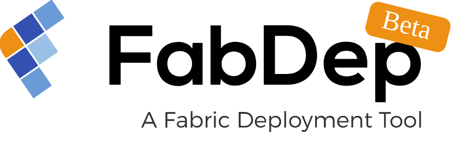

Home¶
Build Distributed Multicloud Blockchain Network on Your Preferred Cloud VMs (AWS, Azure, or any other cloud environment)
Deploy Blockchain components on different cloud platforms using Kubernetes and manage them all in one place through our innovative Hyperledger Fabric Enterprise Network Management Solution.